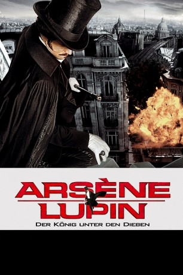

#8009 Arsène Lupin
Alternativ: Arsene Lupin
 
 IMDB-Wertung: 5.4 / 10
IMDB-Wertung: 5.4 / 10  Metascore: 0
Metascore: 0 
Frankreich, Ende des 19. Jahrhunderts: Arsène Lupin vereint alle Eigenschaften, die einen Mann attraktiv und einen Meisterdieb erfolgreich machen. Schon als Kind wurde er von seinem Vater in verschiedenste Kampfkünste eingeführt. Außerdem spricht er zahlreiche Sprachen, ist ein Meister der Verkleidung und besitzt einen erlesenen Kunstgeschmack. Besonders wichtig für seine Arbeit ist jedoch Lupins raffinierter Umgang mit Frauen. Ohne dass es die bezauberten Damen bemerken, hat sich der charmante Gentleman ihres wertvollen Schmucks bemächtigt und verschwindet über alle Berge. Doch Arsène wird nicht mit dem frühen Verlust seines Vaters fertig.
Jahr: 2004
Dauer: 130 Minuten
FSK: 12
Land: Frankreich Studio: Sunfilm EntertainmentTonspuren: DTS - ,
Untertitel:
Auflösung: 1080p (1920x816) Größe: 6287 MB
Genre: Action, Abenteuer, Krimi, Liebe, Mystery
Regisseur: Jean-Paul Salomé
Drehbuch: Jean-Paul Salomé
Soundtrack: Debbie Wiseman
Darsteller:
 Romain Duris als Arsène Lupin
Romain Duris als Arsène Lupin Kristin Scott Thomas als Joséphine - Comtesse de Cagliostro
Kristin Scott Thomas als Joséphine - Comtesse de Cagliostro Eva Green als Clarisse de Dreux-Soubise
Eva Green als Clarisse de Dreux-Soubise- Patrick Toomey als Léonard
 Mathieu Carrière als Le duc d'Orléans
Mathieu Carrière als Le duc d'Orléans Philippe Lemaire als Le cardinal d'Etigues
Philippe Lemaire als Le cardinal d'Etigues Aurélien Wiik als Jean Lupin
Aurélien Wiik als Jean Lupin- Jessica Boyde als La femme aux diamants
 Xavier Beauvois als Le médecin
Xavier Beauvois als Le médecin Philippe Laudenbach als Le préfet
Philippe Laudenbach als Le préfet- Sonia Dufeu als La soubrette
 Arthur Dupont als Le Vendeur de Journaux
Arthur Dupont als Le Vendeur de Journaux Anne Suarez als Eglantine
Anne Suarez als Eglantine- Derrick Brenner als Le garde du corps de l'archiduc (uncredited)
- Victor Loukianenko als Un bourgeois (uncredited)
 Pascal Greggory als Beaumagnan - Théophraste Lupin
Pascal Greggory als Beaumagnan - Théophraste Lupin- Robin Renucci als Le duc de Dreux-Soubise
 Philippe Magnan als Bonnetot
Philippe Magnan als Bonnetot- Marie Bunel als Henriette Lupin
- Françoise Lépine als La duchesse
- Guillaume Huet als Arsène Lupin enfant
- Adèle Csech als Clarisse enfant
- Gérard Chaillou als M. Kasselbach
 Alain Figlarz als L'apache
Alain Figlarz als L'apache Nicky Naudé als Théophraste Lupin - le père d'Arsène
Nicky Naudé als Théophraste Lupin - le père d'Arsène- Christophe Laubion als Le brigadier
- Eric Vanzetta als Le premier gendarme
- Hervé Falloux als Le maître d'hôtel
- Alain Cauchi als Le capitaine du paquebot
- Laurent Besançon als Le second du capitaine
- Rémy Roubakha als Le gendarme à l'hospice
- Michel Dourienne als Le curé
- Valérie Decobert-Koretzky als La comédienne du Ttain
- Simon Delétang als Le croupier
- Stéphane Foenkinos als Le conservateur
- François Monnié als Le gardien de musée
- Gaëlle Vincent als La métisse
- Jean-François Gallotte als Le majordome
- Pierre Aussedat als Louis Desfontaines
- Laurent Cotillard als Le marin
- Marie-Thé Colmagne als Une parisienne (uncredited)
- Olivier Desautel als Un apache (uncredited)
- Arnaud Klein als Un officier (uncredited)
Datei: X:\2004(A-F)\Arsène Lupin (2004, FSK12, 1920x816).mkv seit 10.01.2018
Festplatte: HD 2003-2004-2005(A-F)
 Es gibt insgesamt 39 Filme in der Gruppe '2004(A-F)'
Es gibt insgesamt 39 Filme in der Gruppe '2004(A-F)'